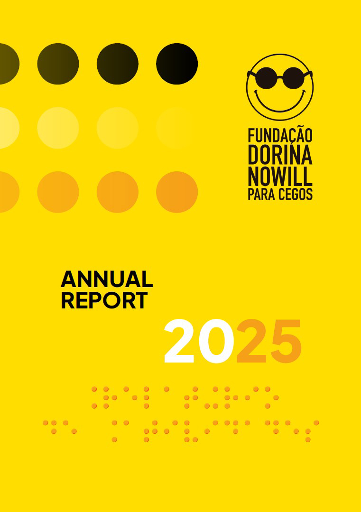

COVER
BACK COVER
CONTENTS, página2
1. INSTITUTIONAL OVERVIEW, página5
2. INCLUSION SUPPORT SERVICES, página15
3. ACCESSIBILITY SOLUTIONS, página27
4. ADMINISTRATIVE AREAS, página33
5. FINANCIAL INDICATORS, página57
6. BOARD AND MANAGEMENT, página69
LISTA DE LINKS